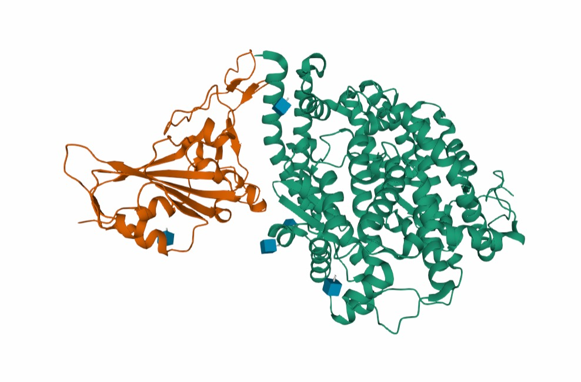
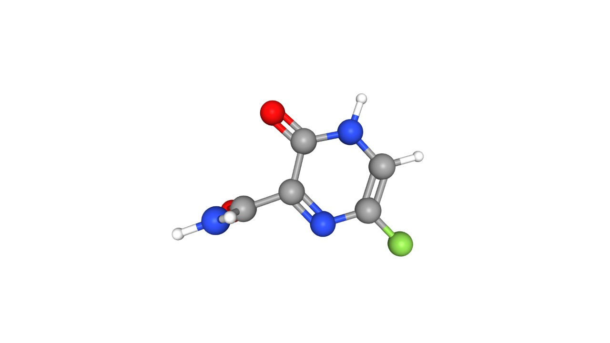
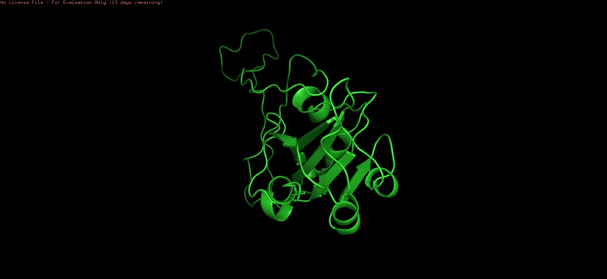
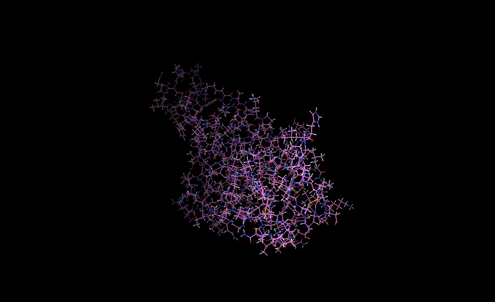
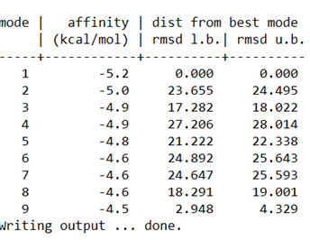
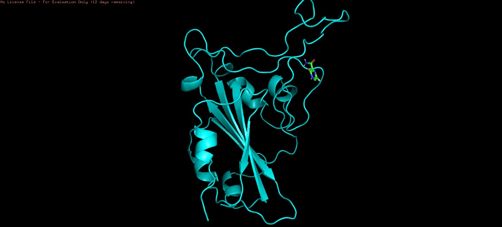
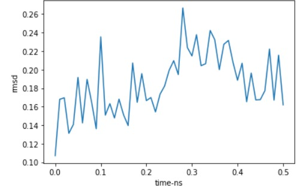
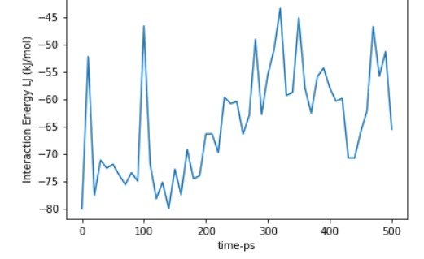
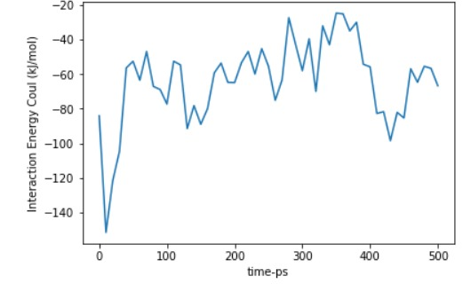

La situación del Covid-19 y el reposicionamiento de los fármacos
El Sars-Cov2 es un virus de la familia de los coronavirus que apareció el diciembre de 2019 en Wuhan, China y fue transimitido
con celeridad en el resto del mundo, declarándose pronto como una pandemia global por Organización mundial de la salud
y afectando nuestras vidas íntimamente aún hoy en día.
Pese a que ya existen múltiples vacunas para protegernos del covid-19, prácticamente no hay medicamentos que lo traten, situación que se agrava mucho en
países de bajo dedarrollo.
Científicos de todo el mundo trabajan investigando nuevos médicamentos para tratar el covid-19, pero las nuevas investigaciones de fármacos
son en extremo costosas y requieren de alta tecnología e infraestructura. Por otra parte, en estos procesos de desarrollo, se descartan diversas formulaciones
químicas en estudios preliminares antes de llegar a un producto final, formulaciones de las cuales ya existirían estudios e información de base y que podrían ser muy útiles para
para tratar enfermedades diferentes, acelerando partes del proceso de investigación y volviéndolas así más accesibles para todos. A este método se le llama reposicionamiento.
Así pues, este proyecto se trata de explorar el reposicionamiento del Favipiravir, medicamento japonés que solía utilizarse para tratar la influenza,
ahora para tratar el Covid-19 con la esperanza de inhibir su propagación en el cuerpo. De ser así, este medicamento que ya está aprobado para su fabricación en México, podría
contribuir para el tratamiento de miles de personas que sufren de la enfermedad.
De manera general, el club 12 de Clubes de Ciencia, The purpose of repurposing: New uses for old drugs tiene el objetivo de comprender y experimentar el reposicionamiento de medicamentos
mediante herramientas computacionales para el análisis molecular, donde podemos realizar simulaciones para verificar la eficacia de viejos medicamentos
ante el covid-19 para reposicionarlos, con el objetivo de colaborar ante la contingencia mundial con miras a promover la vida sana y bienestar de personas del todo el mundo
y de todas las edades como parte del tercer objetivo para el desarrollo sustentable de la ONU. ¿Qué son estos objetivos?
En la asamblea general de la ONU en el 2015, 193 países del mundo aceptaron 17 objetivos para el desarrollo sustentable, un plan maestro para poner fin a la pobreza
combatir la desigualdad y hacer frente al cambio climático. Entre dichos objetivos, figuran varios del índole social como la igualdad de género y la reducción de la desigualdad,
y por otra parte también aquellos de índole técnico como la acción para el cambio climático, la búsqeuda de energías no contaminantes
y por supuesto la salud y el bienestar. Son en estos objetivos donde nosotros científicos y científicas tenemos una responsabilidad social
de compartir y aplicar nuestros conocimientos y habilidades por el bien de los demás.
Hablando en particular del tercer objetivo, salud y bienestar, la Organización Mundial de las Naciones Unidas declara que antes de la emergencia
se habían logrado grandes avances en esta área, mejorando la esperanza de vida y reduciendo la mortalidad infantil y materna, mejorando la vida de millones de personas.
Sin embargo, la actual crisis sanitaria del Covid-19, ha afectado la vida de millones de personas sin precendentes, propagando el sufrimiento humano por lo que este tercer objetivos
se ha vuelto uno de los más urgentes. Creemos que la búsqeuda, en especial el reposicionamiento de nuevos fármacos para tratar el Covid-19 es una estrategia eficiente
para colaborar en el cumplimiento de este objetivo 3.
Por otra parte, Clubes de ciencia México son una organización civil que busca promover la educación científica para generar un alto impacto
tecnológico, organización la cual ha organizado estos clubes y además ha sido reconocida por la Fundación de las Naciones Unidas como una organización
comprometida con los objetivos del desarrollo sostenible.
El covid y sus características
El síndrome respiratorio agudo severo coronavirus 2 (SARS-CoV-2) es el virus detrás del brote mundial de la pandemia del COVID-19. El SARS-CoV-2 es un virus de estructura esférica que mide aproximadamente 100 nanómetros (nm). Gracias a las investigaciones realizadas para conocer la estructura del SARS-CoV-2, se ha determinado una de las características importantes del SARS-CoV-2 la cual es la presencia de una proteína ubicada en su superficie denominada proteína spike (o proteína S) que permiten que estos virus ingresen en las células huésped y provoquen una infección.
Así pues,el coronavirus SARS-CoV-2 ingresa a la célula mediante la interacción con la proteína S que es una proteína que se encuentra altamente glicosilada y que contiene alrededor de 1400 aminoácidos. La proteína S contiene dos subunidades (S1 y S2) funcionales que se dividen en tres dominios: cabeza, tallo, y cola citoplasmática. La subunidad S1 N-terminal forma la cabeza globular de la proteína S y la subunidad S2 C-terminal--que es el elemento más conservado de la proteína S--forma el tallo de la proteína y está directamente incrustada en la envoltura vira. La subunidad S1 reconoce y se une a los receptores en la célula huésped, mientras que la subunidad S2 es responsable de fusionar la envoltura del virus con la membrana de la célula huésped. La subunidad S1 contiene el motif de unión al receptor (RBM por sus siglas en inglés) que es responsable de la interacción con la enzima convertidora de angiotensina 2 (ACE2) una proteína presente en la membrana de las células humanas que tiene afinidad por el RBD (Wang, 2020), el cual se introduce junto con el resto del virus al interior de la célula. Su involucramiento en la inserción del virus en células humanas ha hecho que el RBD se convierta en la sección de mayor interés para los científicos e investigadores. Esta interacción entre RBM y ACE2 es el punto de ingreso en la patogénesis de la infección.
La proteína spike del Covid-19
El Favipiravir
El Favipiravir (T-705; 6-fluoro-3-hydroxy-2-pyrazinacarboxamida) y los compuestos relacionados T-1105 y T-1106 fueron sintetizados por primera vez por la compañía Toyama Chemical Co. (Japón).
El Favipiravir es un fármaco antiviral japonés usado para el tratamiento de la influenza. En mayo del 2020, Rusia aprobó su versión genérica conocida como Avifavir, al encontrar evidencia inicial que sugería un efecto inhibidor de la replicación del virus SARS-CoV-2 en el organismo. (Córdoba, 2020).
Actúa como un profármaco, ejerciendo su amplia actividad antiviral principalmente a través de su metabolito activo, el T-705 ribofuranosiltrifosfato (T-705RTP), el fármaco activo se genera intracelularmente a través de la fosforilación de varias quinasas.
El mecanismo de acción del Favipiravir es la inhibición directa de la replicación y transcripción del genoma viral tipo ARN, a través del bloqueo de la actividad de la ARN-polimerasa ARN-dependiente presente en los virus gripales y otros virus con genoma ARN
, incluido el virus Ébola (Jordi & Nuria, 2017). (Probándose en pacientes con infección por el virus hemorrágico ébola, con pobres resultados.)
De este modo su índice de selectividad (la relación del 50% de la concentración celular inhibitoria (CC50) /50% de la concentración inhibitoria frente a la gripe (IC50), es superior a 6.000 en relación a la ribavirina, otro antiviral inhibidor de las ARN-polimerasas.
Diferentes estudios in vitro, utilizando la línea celular MDCK y basados en el análisis de la reducción del número de placas/focos producidos, han demostrado que Favipiravir es capaz de inhibir la replicación de todos los subtipos y cepas de los tres tipos de virus gripales A, B y C incluyendo aquellos con resistencia genética demostrada frente a los inhibidores de la neuraminidasa.
A diferencia de la Ribavirina, Favipiravir apenas inhibe el enzima inosina-monofosfato-deshidrogenasa, por lo que presenta muy pocos efectos citotóxicos. Favipiravir se puede administrar por vía oral en forma profármaco (ribofuranosa), siendo rápidamente adsorbido a nivel intestinal y convertido en la forma activa inicial por las nucleosidasas celulares 5-7. La dosis óptima todavía no se ha establecido de forma definitiva, pero podría estar en 1200-1400 mg/ primer día y 400 mg /día durante 5-7 días. (Jordi & Nuria, 2017)
Los estudios realizados in vivo en modelos murinos han demostrado que Favipiravir protege de forma total frente a la infección letal provocada por una gran variedad de subtipos de los virus gripales. La administración oral de 30 mg/Kg/día 2-4 veces al día durante un mínimo de 5 días, es capaz de proteger el 100% de los ratones infectados con diversas cepas gripales, incluida la aviar A(H5N1) en comparación con la eficacia del oseltamivir.
El Favipiravir ha demostrado ser una buena opción para tratar el COVID-19, esto por la capacidad que tiene de interferir en la unión del RBD con la ECA2 mediante su anclaje en los residuos involucrados del RBD. Los residuos que participan en la unión del RBD con la ECA2 son Lisina417, Glicina446, Tirosina449, Tirosina453, Leucina455, Isoleucina472, Fenilalanina486, Asparigina487, Tirosina489, Ácido glutámico493, Glicina 496, Treonina500, Asparigina501, Glicina502 y Tirosina505; y según un docking molecular realizado por Cubuk et al., el Favipiravir se une a tres de estos residuos Glicina 496, Asparigina501, Tirosina505, superando el número de residuos a los que se unen otros fármacos que han surgido como opciones para tratar el COVID-19 (Lopinavir, Remdesivir)
Chen et al. realizaron un estudio en el que se comparó el efecto del Favipiravir, con el del Arbidol, otro medicamento que se ha planteado como alternativa de tratamiento; el resultado fue que el Favipiravir genera un beneficio terapéutico significativamente mayor.
El Favipiravir también fue comparado con la combinación de tratamiento Lopinavir/Ritonavir en un estudio realizado por Pilkington et al., en el que se demostró que el Favipiravir tiene un periodo más corto de eliminación del virus, este es de 4 días, y el del Lopinavir/Ritonavir es de 11.
El favipiravir antes del Covid-19
Favipiravir fue aprobado en Japón en 2014 para la prevención y tratamiento de la gripe pandémica A (H1N1) pdm095; desde entonces se ha venido utilizando de una forma no siempre protocolizada y algo errática frente a cualquier tipo de gripe.
El FAVIPIRAVIR es activo contra una amplia gama de virus de la gripe, incluidos A (H1N1) pdm09, A (H5N1) y el virus aviar A (H7N9).
Favipiravir tiene un oscuro pasado de teratogenicidad.
El fármaco causó deformidades en recién nacidos durante las décadas de 1950 y 1960, la misma época de la ignominiosa historia de otro medicamento maldito, la Talidomida. (Lopeztricas & Manuel, 2020).
Como se dijo anteriormente existe cierta preocupación por la teratogenicidad basada en datos de estudios en animales, lo que significa que podría tener un efecto sobre el crecimiento y el desarrollo de los bebés. Por lo tanto, las mujeres embarazadas están excluidas del ensayo clínico. Sin embargo, no hay ninguna evidencia clara sobre esto en los estudios en humanos.
También en estudios al igual que un ensayo clínico en Massachusetts, en el Hospital General y otros dos hospitales de ahí se ha llegado a ver un nivel de ácido úrico elevado en la sangre debido a la droga.
Por lo tanto, se necesita asegurarse de que la gente no tenga gota y monitorear los niveles sanguíneos de ácido úrico. puede haber algunos efectos secundarios gastrointestinales, pero eso es todo.
Conceptualmente Favipiravir abre una nueva línea de fármacos antivirales basados en la inhibición de la replicación viral (ARN-polimerasa) y por ello de mayor eficacia terapéutica. Los inhibidores de la neuraminidasa sólo actúan dificultando o disminuyendo la salida y difusión de las nuevas partículas gripales que surgen de la célula infectada, pero apenas tienen efecto directo sobre la carga viral. Favipiravir actúa directamente sobre la génesis viral y reduce significativamente la carga
viral intra y extracelular, disminuyendo la capacidad infectiva del paciente. La combinación sinérgica de dos antivirales como Favipiravir y oseltamivir, que actúan en localizaciones distintas del ciclo replicativo gripal, podría ser una buena estrategia frente a los pacientes con gripe grave ingresados
METODOLOGÍA
Sobre el docking:
Nuestra metodología consta primeramente de una investigación documental de ensayos clínicos e investigaciones científicas publicadas en páginas de internet de instituciones gubernamentales de salud y otras de
publicación de investigaciones médica-científica; en particualr referentes al Favipiravir, al Covid-19 y a la relación entre ellos. Por otra parte, realizamos simulaciones por computadora para analizar y optimizar el docking entre el Favipiravir y la proteína del Covid-19, haciendo uso
de los softwares de PyMol, PMV
y vina como parte complementaria para fundamentar el desarrollo in silico del Favipiravir para tratar al Covid-19.
Como base utilizamos la estructura definida como 6M0J, que muestra a la sección RBD de la proteína Spike del SARS-CoV-2 unida con la proteína ECA2. La estructura fue descarga en formato PDB
mientras que en PubChem se buscó la estructura del Favipiravir, y se descargó en formato SDF 3D, las cuales se presentan a continuación:


Estructuras moleculares utilizadas en la simulación del spike del Covid-19 y del Favipiravir respectivamente
A continuación se buscará modificar la molécula 6M0J eliminando los componentes que no forman parte del RBD, mientras
guardamos de igual manera la molécula del Favipiravir en formato PBD. Posterior a esto realizaremos una visualización en PMV
de la estructura 6M0J para agregar los hidrógenos faltantes para finalmente agregar el favipiravir en esa misma visualización y realizar el docking.
Con el fin de que nuestra investigación sea científicamente reproducible y transparente, hemos documentado el proceso de nuestras simulaciones en una serie de vídeos para que cualquiera
que lo desee pueda ponerlas a pruba y se presentan a continuación:
Documentación audiovisial de las simulaciones para el Docking
Sobre la dinámica molecular
Para nuestra investigación respecto a la dinámica molecular entre el favipiravir y la proteína spike del Covid-19, nos serviremos
de un análisis de la distancia media cuadrática entre la molécula y la proteína, así como un análisis energético por medio de una
gráfica de energía de Lennard-Joseph y otra de Coulomb; todo esto con el fin de reflexionar respecto a la estabilidad de la unión entre
el favipiravir y el Covid-19 para evaluarlo como prospecto para ser un fármaco apto para tratar dicha enfermedad.
Por último realizaremos una simulación computacional de dicha interacción.
De igual manera, mostraremos a continuación la documentación audiovisual del proceso para ejecutar nuestra simulación computacional
con el fin de promover la reproducibilidad y transparencia en nuestra investigación científica.
Documentación audiovisual para la metodología de la dinámica molecular
RESULTADOS
Sobre el docking:
Para comenzar, utilizando las moléculas mostradas en la metodología, se procedió realizando una modificación de la estructura 6M0J, en la cual se retiró a la molécula ACE2 y a todos los componentes que no forman parte del RBD como iones Zinc, iones Cloro y moléculas de agua.
El resultado se guardó en formato PDB y se muestra a continuación:

Molécula 6M0J modificada
A continuación, se visualizó en PyMol la estructura del Favipiravir obtenida en PubChem, y fue guardada en formato PDB.
Una vez hecho esto, se realizó la visualización en PMV, primero abriendo la estructura 6M0J modificada, a la cual se le agregaron hidrógenos faltantes, y se guardó en formato PDBQT:

Molécula 6M0J sin hidrógenos faltantes
A partir de aquí, en la misma visualización de 6M0J, se agregó la molécula de Favipiravir, y ésta se guardó en formato PDBQT donde lucía de la siguiente manera:
Favipiravir en PDBQT
Tras realizar el Docking en la aplicación Vina fue posible observar los resultados a través del archivo log.txt generado; en este archivo se pueden observar nueve posibles opciones en las que el Favipiravir se puede unir al RBD, es decir, los binding poses
que se muestran a continuación:

binding poses del docking Covid-19 y Favipiravir
De esta manera pudimos seleccionar el primer binding pose como el ideal pues tiene la mayor afinidad con la proteína de unión permitiéndonos
obtener el archivo output.pdbqt el cual pudimos visualizar con PyMol para poder presentar el producto final:

Favipiravir unido exitosamente a la proteína spike del Covid-19 en simulación
Sobre la dinámica molecular
El primer resultado representativo del proceso de dinámica molecular es una gráfica de RMSD (Root-mean-square deviation), este tipo de gráficas se observa la distancia media cuadrática mínima entre las estructuras básicas de las proteínas superpuestas, por lo que entre más aproximadamente constante sea
el comportamiento de la gráfica en una región, más óptimo o estable será el binding pose elegible para el Favipiravir, ya que este fármaco se considera como una proteína superpuesta al RBD.

Distancia media cuadrática mínima entre las estructuras de las proteínas
Obsérvese que apesar de que la escala de la gráfica es muy pequeña y se visualiza los más mínimos cambios, podemos asumir que se mantiene
una distancia aproximadamente constante en un rango entre 0.13 y 0.14 entre el tiempo (0,0.22) salvo un crecimiento excesivo en
el instante 0.1. Luego, en el intervalo de tiempo (0.22,0.29) podemos observar un crecimiento contínuo y después de eso se mantendrá aproximadamente
constante entre distancias de 0.16 y 0.24. Finalmente podemos decir que el binding pose encontró una posición lo suficienteente
estable para ser elegible, aunque somos conscientes de que experimenta variaciones importantes.
Posteriormente, se encontraron los resultados de las energías de interacción de no unión entre el RBD y el Favipiravir, estas energías de interacción son la Lennard-Joseph y la de Coulomb.
Se obtuvo el valor más constante de las dos gráficas para obtener la energía de interacción total:
Energía Lennard-Joseph = -60 kJ/mol
Energía de Coulomb = -65 kJ/mol
Energía Total = -125 kJ/mol


Gráfica de la energía de Lennard-Joseph y la Energía de Coulomb respectivamente
Con la información recabada de nuestro análisis energético y de la investigación documental podemos llegar a concluir que el comportamiento
relativo al favipiravir con respecto a la proteína spike del Covid-19 tiene un comportamiento errático en algunos puntos, pero podemos interferir
que es lo suficientemente estable como para ser un prospecto para fármaco para tratar el Covid-19.
A continuación mostramos nuestra simulación de la dinámica molecular:
CONCLUSIÓN
El Favipiravir es una gran opción farmacéutica para el tratamiento del Covid-19, ya que se ha demostrado que presenta mejor efectividad que otros medicamentos utilizados para realizar la misma función, y a pesar de que presenta diversos efectos adversos, éstos se pueden controlar perfectamente sin afectar al paciente.
Los experimentos realizados en softwares computacionales demuestran que el Favipiravir puede evitar la infección del Sars-CoV-2 por su capacidad de impedir la unión de la proteína ACE2 con el RBD de la proteína Spike, al cual se une el medicamento.
Las herramientas computacionales utilizadas representan una buena estimación de lo que sucede molecularmente con el RBD y el Favipiravir, sin embargo, siguen sin representar lo que pasa realmente, y pare llegar esto, se necesita hacer uso de softwares computacionales que demandan un poder computacional al cual no se puede tener acceso fácilmente.